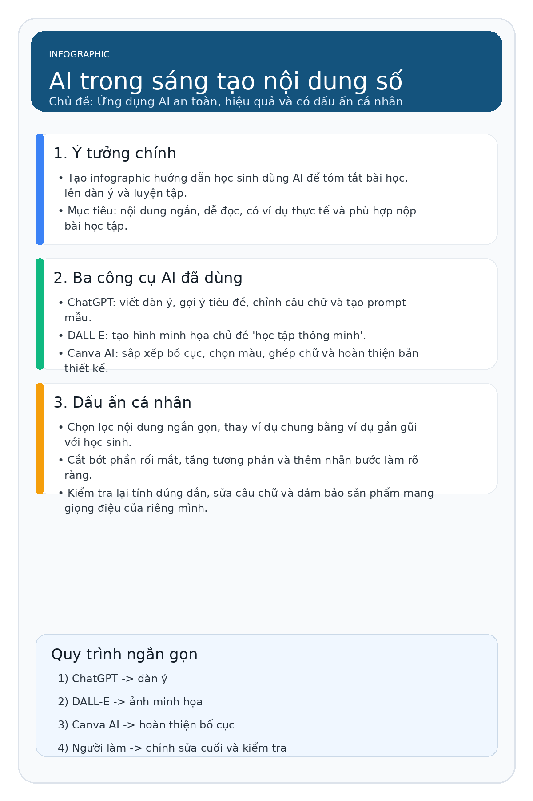
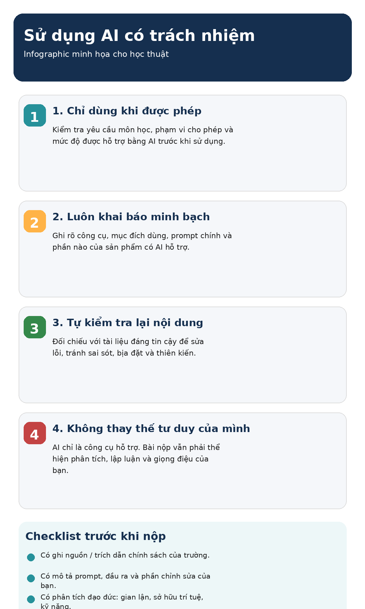

Tổng quan Portfolio
Giới thiệu bản thân và mục tiêu học tập môn học Công nghệ số & AI
Lê Đức Tiến
Sinh viên UET-VNU- Mã sinh viên: 25021981
- Trường học: Đại học Công nghệ - ĐHQGHN
- Lớp học phần: UET.A13
- Lớp sinh hoạt: K70i - cs6 - cn8
- Email liên lạc: leductien15052007tb@gmail.com
Mục tiêu của Portfolio này
- Hệ thống hóa năng lực số: Lưu trữ và trình bày khoa học toàn bộ 6 sản phẩm bài tập thực tế từ cơ bản đến nâng cao.
- Minh chứng kiểm soát AI: Thể hiện vai trò kiểm duyệt (Human-in-the-loop) để tăng cường tối đa hiệu quả thay vì lạm dụng AI.
- Trải nghiệm UX tối ưu: Xây dựng giao diện web động trực quan giúp người xem, thầy cô dễ dàng kiểm chứng tiến trình học tập của sinh viên.
Mục tiêu học tập & Phát triển
- Kiến thức cốt lõi: Làm chủ tư duy tổ chức dữ liệu, tối ưu truy vấn thông tin khoa học và cơ chế Prompt Engineering.
- Ứng dụng chuyên ngành: Nghiên cứu sâu về An toàn thông tin, ứng dụng học sâu (Deep Learning) để nhận diện mã độc hại.
- Năng lực bổ trợ: Sử dụng thành thạo các công cụ làm việc nhóm trực tuyến và thiết kế tài liệu khoa học chuẩn học thuật.
Hồ sơ Kỹ năng & Công cụ hỗ trợ
Tuần 1: Quản lý Tệp tin & Thư mục
Xây dựng cấu trúc thư mục tối ưu cho việc học tập và nghiên cứu khoa học
Quy tắc Tổ chức Hệ thống Tệp tin của Lê Đức Tiến
Để duy trì một không gian làm việc số khoa học, tôi thiết lập cấu trúc thư mục học tập chuẩn hóa tại UET-VNU. Hệ thống này đảm bảo: phân loại rõ ràng theo từng môn học/nhiệm vụ, tách biệt tài nguyên học tập và kết quả thực hành, đặt tên tệp tin tuân thủ quy tắc thống nhất (không dấu tiếng Việt, phân tách bằng dấu gạch dưới, ghi rõ phiên bản).
[MonHoc]_[TuanX]_[NoiDung]_[vVersion] để quản lý lịch sử.
Mô phỏng Cây Thư mục Tương tác
Click vào các thư mục để mở rộng và click vào tệp tin để xem ảnh minh chứng tương ứng.
Chọn một tệp tin hình ảnh (.png) hoặc tài liệu (.txt) trong cây thư mục bên trái để hiển thị minh chứng trực quan.
Tuần 2: Khai thác & Đánh giá Nguồn tin Học thuật
Chủ đề nghiên cứu: Ứng dụng Học sâu (Deep Learning) trong phát hiện Mã độc (Malware)
1. Chiến lược tìm kiếm học thuật
Để tiếp cận các tài liệu bảo mật và học sâu chất lượng cao, sinh viên đã xây dựng chiến lược tìm kiếm thông tin bằng cách kết hợp cơ sở dữ liệu quốc tế như **IEEE Xplore**, **ACM Digital Library**, **arXiv**, và các hội nghị uy tín hàng đầu về an ninh mạng như **NDSS**.
Ví dụ truy vấn nâng cao: "deep learning" AND (malware OR "static analysis") site:arxiv.org filetype:pdf
2. Bảng Tổng hợp & Đánh giá 10 Nguồn tin theo Thang điểm Tin cậy
Dữ liệu thực tế được chấm điểm dựa trên uy tín tác giả, tính khách quan của nhà xuất bản, phương pháp nghiên cứu và tính cập nhật.
| STT | Nguồn tài liệu | Phân loại | Phân tích & Đánh giá độ tin cậy | Điểm | Xếp hạng | Trích dẫn |
|---|
Tuần 3: Prompt Engineering & Thiết kế Mạng CNN
Ứng dụng AI tối ưu hóa mô hình học sâu phân loại hình ảnh và viết báo cáo học thuật bằng LaTeX
1. Kỹ thuật Prompt Engineering áp dụng
Để có được mã nguồn PyTorch CNN tối ưu và mẫu báo cáo LaTeX chuẩn IEEE khoa học, sinh viên đã áp dụng kỹ thuật **Prompt Engineering với vai trò rõ ràng, bối cảnh nhiệm vụ và ràng buộc chặt chẽ**. Hãy xem sự khác biệt dưới đây:
Prompt thô, ngắn
"Viết code python xây dựng một mạng nơ-ron tích chập CNN phân loại hình ảnh sử dụng PyTorch."
Prompt áp dụng framework Role-Context-Task-Constraint
"Bạn là một AI Researcher chuyên nghiệp về Computer Vision. Hãy thiết kế một lớp mạng CNN bằng PyTorch gồm 3 tầng conv, tích hợp Batch Normalization và Dropout. Ràng buộc: Mã nguồn phải tường minh, có chú thích chi tiết bằng tiếng Việt và tuân thủ chuẩn PEP8."
2. Giải pháp Overfitting & Hiệu suất phối hợp Multi-AI
Bảng so sánh hiệu suất (Giờ làm việc)
| Giai đoạn thực hiện | Truyền thống | Kết hợp AI | Hiệu suất tăng |
|---|---|---|---|
| Thiết kế & Lập trình Code PyTorch | 8.0 giờ | 2.0 giờ | 75% |
| Tra cứu tài liệu học thuật khoa học | 5.0 giờ | 1.5 giờ | 70% |
| Soạn thảo và định dạng LaTeX | 6.0 giờ | 2.0 giờ | 66% |
| Tổng cộng toàn bộ nhiệm vụ | 19.0 giờ | 5.5 giờ | Giảm 71% |
Chiến lược xử lý Overfitting (Gemini đề xuất): Trong thực nghiệm ban đầu, độ chính xác tập Train đạt 98% nhưng Validation chỉ đạt 72%. Sau khi thực hiện truy vấn phản biện AI, Gemini đề xuất tích hợp thêm lớp nn.Dropout(p=0.5) trước ngõ ra tuyến tính và sử dụng bộ điều khiển tốc độ học StepLR để giảm LR đi một nửa sau mỗi 5 epochs. Kết quả độ chính xác tập Valid tăng mạnh và ổn định ở mức 81.5%.
*Bài học kinh nghiệm: AI cung cấp khung thuật toán rất nhanh nhưng con người cần kiểm tra các thư viện cập nhật để tránh lỗi hàm cũ (bị deprecated) và kiểm duyệt tính đúng đắn của logic.*
Tuần 4: Công cụ Cộng tác & Hợp tác Trực tuyến
Chủ đề dự án nhóm: Xây dựng bài thuyết trình ứng dụng quản lý chi tiêu cho sinh viên
1. Vai trò cá nhân & Sự kết hợp 4 công cụ trực tuyến
Trong dự án nhóm nhỏ, tôi phụ trách xây dựng tài liệu về **Nhu cầu sinh viên, các tính năng cốt lõi của ứng dụng chi tiêu** và quản lý hệ thống lưu trữ tài nguyên. Sự phối hợp được diễn ra đồng bộ qua: **Trello** (Quản lý tiến độ), **Google Docs** (Soạn thảo văn bản real-time), **Google Drive** (Lưu trữ và chia sẻ file khoa học), và **Discord** (Kênh giao tiếp nhanh).
2. Mô phỏng Bảng Kanban Dự án của Lê Đức Tiến
Click vào các thẻ việc dưới đây để xem chi tiết mô tả công việc, người tham gia và minh chứng hành động tương tác.
3. Nhật ký tiến độ 7 ngày phối hợp nhóm
Nhấp chuột vào các nút cột mốc từ Ngày 1 đến Ngày 7 để xem nhật ký công việc chi tiết của Tiến.
Tuần 5: Ứng dụng AI Tạo sinh Sáng tạo Nội dung số
Chủ đề sản phẩm: Infographic 1 trang "AI hỗ trợ học tập an toàn và hiệu quả"
1. Quy trình Phối hợp 3 Công cụ Generative AI
Trong dự án thiết kế Infographic, sinh viên đã xây dựng quy trình kết hợp khép kín: dùng **ChatGPT** lập kế hoạch và soạn thảo văn bản nháp, sử dụng **DALL-E** tạo hình ảnh minh họa trung tâm, và dùng **Canva AI** để phối màu, bố cục và tối ưu hóa kiểu chữ.
*Điểm cốt lõi: Để tránh nội dung chung chung hoặc thiết kế rập khuôn của AI, sinh viên luôn đóng vai trò kiểm duyệt (Human-in-the-loop) để rút gọn chữ, chỉnh lại độ tương phản màu và thay đổi vị trí bố cục.*
Sản phẩm Infographic hoàn thiện

*Nhấp vào ảnh để xem độ phân giải cao phóng to*
2. Nhật ký chi tiết Prompts, kết quả nhận được và phần chỉnh sửa của Tiến
| Công cụ AI | Prompt thực tế đã nhập | Đầu ra (kết quả thô) từ AI | Hoạt động chỉnh sửa cá nhân (Human-in-the-loop) |
|---|---|---|---|
| ChatGPT | Hãy viết dàn ý cho infographic 1 trang về việc dùng AI trong học tập, dành cho học sinh, văn phong ngắn gọn và dễ hiểu. |
Đưa ra dàn ý gồm 5 phần dài: lợi ích, công cụ, quy trình, lưu ý đạo đức, kết luận. | Rút gọn xuống chỉ còn 3 khối thông tin cốt lõi để bố cục thông thoáng. Bổ sung các ví dụ thực tiễn như: lập dàn ý, tóm tắt bài học, và luyện viết câu để gần gũi với học sinh hơn. |
| DALL-E | Tạo một minh họa dạng infographic nền sáng, chủ đề học tập với AI, có học sinh, laptop, biểu tượng bóng đèn và nhịp màu xanh dương - xanh lá. |
Tạo ra hình ảnh minh họa mang tính công nghệ và học tập với màu sắc hiện đại. | Lọc và chọn ảnh có ít chi tiết rối mắt, tăng độ sáng nền để làm nổi bật hình ảnh, đưa vào trung tâm infographic để làm điểm nhấn chính mà không đè lên phần chữ. |
| Canva AI | Thiết kế infographic dọc 1 trang, bố cục ba khối, màu xanh dương chủ đạo, chữ dễ đọc, phù hợp bài nộp trên lớp. |
Gợi ý một số mẫu bố cục (layouts), hỗ trợ đặt văn bản và chèn các icon cơ bản. | Thay đổi màu sắc sặc sỡ sang tông dịu mắt hơn để tăng tính chuyên nghiệp. Loại bỏ các icon thừa thãi và gia tăng khoảng trắng để bố cục nhìn thông thoáng, dễ đọc trên di động. |
Tuần 6: Sử dụng AI có Trách nhiệm & Đạo đức Học thuật
Nghiên cứu so sánh chính sách của các trường đại học và xây dựng bộ nguyên tắc cá nhân
1. So sánh chính sách quản lý AI học thuật
UEH xem AI là công cụ hỗ trợ nhưng nhấn mạnh tác giả phải hoàn toàn chịu trách nhiệm về tính chính xác và liêm chính của bài nộp.
- Phân biệt rõ AI hỗ trợ (sửa ngữ pháp, dịch thuật) và AI tạo sinh (tạo code, viết ý).
- Yêu cầu bắt buộc phải minh khai: ghi rõ tên AI, mục đích, và phần văn bản có AI hỗ trợ.
- Cấm tuyệt đối hành vi lạm dụng AI để tạo toàn bộ nội dung hoặc ngụy tạo tài liệu, số liệu trích dẫn.
Cho phép sử dụng Generative AI như một đối tác học tập nâng cao nhưng đòi hỏi quy trình kiểm duyệt vô cùng chặt chẽ.
- Sinh viên phải công khai chi tiết: tên công cụ, câu lệnh prompt cụ thể đã dùng và cách tích hợp đầu ra của AI vào sản phẩm cuối.
- Bắt buộc thực hiện quy trình đối chiếu dữ liệu thực tế (fact-checking) để tránh lỗi ảo tưởng của AI.
- Sinh viên giữ quyền giải thích sản phẩm nộp của mình trước hội đồng chuyên môn.
Đặt tính liêm chính học thuật vào khung môn học và khuyến khích sinh viên tự bảo vệ quá trình nghiên cứu của mình.
- Yêu cầu kiểm tra kỹ lưỡng hướng dẫn môn học (Course Guide) trước khi dùng AI cho từng nhiệm vụ riêng biệt.
- Khuyến khích sinh viên lưu giữ lại các bản nháp (drafts) và lịch sử chỉnh sửa để làm bằng chứng chứng minh quá trình tự học tập.
- Đưa ra cảnh báo kỷ luật nghiêm khắc đối với việc nộp các sản phẩm do AI sinh ra cho các phần thi/nhiệm vụ không cho phép dùng AI.
2. Bộ Nguyên tắc Cá nhân khi dùng AI
Cam kết sử dụng AI có đạo đức học thuật. Hãy tích chọn để xác nhận cam kết thực hiện.
-
Nguyên tắc 1 Chỉ dùng AI khi nhiệm vụ cho phép hoặc không bị cấm rõ ràng.
-
Nguyên tắc 2 Luôn kiểm tra lại thông tin, mã nguồn bằng nguồn học thuật đáng tin cậy.
-
Nguyên tắc 3 Khai báo công cụ AI, câu lệnh prompt và phạm vi hỗ trợ một cách minh bạch.
-
Nguyên tắc 4 Không nộp nguyên văn đầu ra thô của AI như là sản phẩm tự làm.
-
Nguyên tắc 5 Giữ phần tư duy logic, lập luận cốt lõi và kết luận do bản thân tự chịu trách nhiệm.
-
Nguyên tắc 6 Không nhập thông tin cá nhân bảo mật hoặc tài liệu chưa được phép chia sẻ lên AI công cộng.
Infographic: Sử dụng AI có trách nhiệm

*Nhấp vào ảnh để xem độ phân giải cao phóng to*
Tổng kết & Đánh giá Hành trình
Tự phản biện về trải nghiệm xây dựng Portfolio và các bài học tích lũy
Trải nghiệm xây dựng Digital Portfolio
Quá trình tổng hợp sản phẩm từ tuần 1 đến tuần 6 giúp tôi nhìn nhận lại toàn bộ chặng đường học tập. Việc thiết kế trang web này giúp tôi thực hành tích hợp đa phương tiện, chuyển đổi các tài liệu thô thành giao diện trực quan và tối ưu trải nghiệm người dùng (UX). Đây không chỉ là bài nộp mà còn là công cụ đắc lực giới thiệu bản thân trong tương lai.
Kiến thức & Kỹ năng quan trọng nhất đã tích lũy
Tôi đã làm chủ được quy trình phối hợp Multi-AI để tăng tốc nghiên cứu khoa học. Kỹ năng thiết lập cấu trúc tệp giúp tổ chức cuộc sống số ngăn nắp. Việc nghiên cứu sâu về học sâu phát hiện mã độc tạo động lực to lớn cho định hướng nghiên cứu An toàn thông tin sau này. Kỹ năng cộng tác trực tuyến giúp tối ưu hóa làm việc nhóm trong tương lai.
Điểm tâm đắc nhất và những Thách thức đã vượt qua
Điểm tâm đắc nhất là việc áp dụng thành công mô hình Human-in-the-loop: kiểm soát chặt chẽ AI để tối ưu hóa độ chính xác mô hình CNN PyTorch và tạo các Infographic chất lượng cao. Thách thức lớn nhất là việc phải chuyển đổi linh hoạt giữa các công cụ trong làm việc nhóm và xử lý lỗi xung đột cú pháp thư viện, tuy nhiên kỷ luật làm việc đã giúp giải quyết triệt để.
"Công nghệ số và Trí tuệ nhân tạo không phải là đường tắt để thay thế tư duy, mà là động cơ phản lực giúp con người bay cao hơn khi được dẫn dắt bằng kỷ luật và sự minh bạch đạo đức."
Trung tâm Tải xuống Tài nguyên
Tải về các tệp báo cáo chi tiết và gói ZIP nộp bài gốc từ tuần 1 đến tuần 6